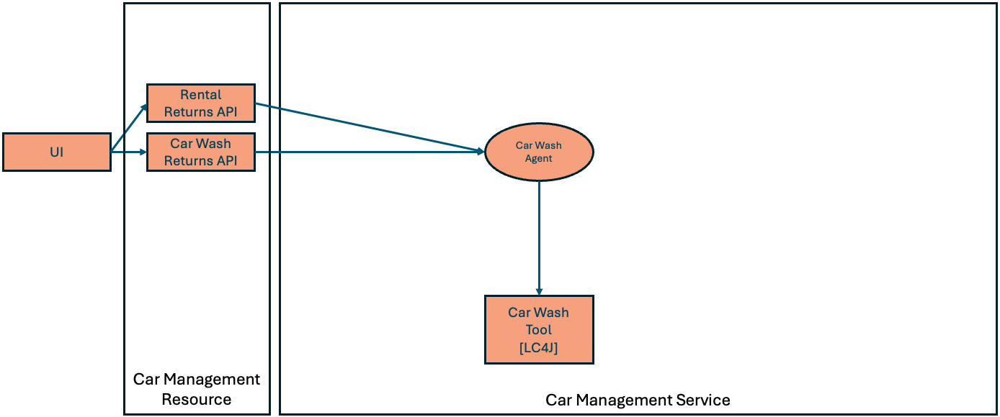

Step 01 - Implementing AI Agents
A new challenge
The Miles of Smiles management team needs help with managing their cars.
When customers return cars they had rented, the team processing the return should be able to record comments about any issues they notice with the car. The car should then be sent for cleaning. The car wash team will pay attention to the comments and clean the car accordingly. When the cleaning is complete, the car wash team will provide their own comments and return the car. If the car is returned with no issues it can be put back into the available pool to be rented.
Running the application
Run the application with the following command:
This will bring up the page at http://localhost:8080.
The UI has two sections. The Fleet Status section shows all the cars in the Miles of Smiles fleet. The Returns section shows cars that are either rented or at the car wash.
Acting as one of the Miles of Smiles team members accepting car rental returns, fill in a comment for one of the cars in the Rental Return section and click the corresponding Return button.
After a few moments the car status will be updated in the fleet status section and the car should no longer appear in the returns section. With the above return comment, the log output would show evidence of a car wash request being made similar to the following:
CarWashTool result: Car wash requested for Mercedes-Benz C-Class (2020), Car #6:
- Interior cleaning
Additional notes: Interior cleaning required due to dog hair in back seat.
Try again, this time with a comment that indicates the car is clean:
In the logs you should see a response indicating a car wash is not required:
- status code: 200
- headers: [content-length: 442], [content-type: application/json; charset=utf-8], [date: Mon, 08 Sep 2025 18:58:10 GMT]
- body: {"model":"gpt-oss:20b","created_at":"2025-09-08T18:58:10.119563Z","message":{"role":"assistant","content":"CARWASH_NOT_REQUIRED","thinking":"We need to decide if car wash needed. Feedback says car looks good. So no wash. Output \"CARWASH_NOT_REQUIRED\"."},"done_reason":"stop","done":true,"total_duration":1307237250,"load_duration":132135042,"prompt_eval_count":284,"prompt_eval_duration":443868833,"eval_count":42,"eval_duration":729291917}
Building Agents with LangChain4j
The langchain4j-agentic module introduces the ability to create Agents. In their simplest form, agents are very similar to AI Services (introduced in section-1):
- Agents are declared in interfaces (and are implemented for you automatically)
- Agent interfaces let you specify a
SystemMessageandUserMessage - Agents can be assigned tools which they can use
- Agents can be defined programmatically or declaratively (with annotations).
In contrast to AI Services, only one method on an agent interface can be annotated with @Agent. This method is the method callers will call to invoke the agent.
Understanding the app

The CarManagementResource provides REST APIs to handle returns of cars from the rental team and the car wash team.
/**
* REST resource for car management operations.
*/
@Path("/car-management")
@Produces(MediaType.APPLICATION_JSON)
@Consumes(MediaType.APPLICATION_JSON)
public class CarManagementResource {
@Inject
CarManagementService carManagementService;
/**
* Process a car return from rental.
*
* @param carNumber The car number
* @param rentalFeedback Optional rental feedback
* @return Result of the processing
*/
@POST
@Path("/rental-return/{carNumber}")
public Response processRentalReturn(
@PathParam("carNumber") Integer carNumber,
@QueryParam("rentalFeedback") String rentalFeedback) {
try {
String result = carManagementService.processCarReturn(carNumber, rentalFeedback, "");
return Response.ok(result).build();
} catch (Exception e) {
e.printStackTrace();
return Response.status(Response.Status.INTERNAL_SERVER_ERROR)
.entity("Error processing rental return: " + e.getMessage())
.build();
}
}
/**
* Process a car return from car wash.
*
* @param carNumber The car number
* @param carWashFeedback Optional car wash feedback
* @return Result of the processing
*/
@POST
@Path("/car-wash-return/{carNumber}")
public Response processCarWashReturn(
@PathParam("carNumber") Integer carNumber,
@QueryParam("carWashFeedback") String carWashFeedback) {
try {
String result = carManagementService.processCarReturn(carNumber, "", carWashFeedback);
return Response.ok(result).build();
} catch (Exception e) {
return Response.status(Response.Status.INTERNAL_SERVER_ERROR)
.entity("Error processing car wash return: " + e.getMessage())
.build();
}
}
}
The CarManagementService, when initialized, creates an instance of the CarWashAgent with a call to the createCarWashAgent method.
@PostConstruct
void initialize() {
carWashAgent = createCarWashAgent();
}
private CarWashAgent createCarWashAgent() {
// CarWashAgent
CarWashAgent carWashAgent = AgenticServices
.agentBuilder(CarWashAgent.class)
.chatModel(models.baseModel())
.tools(carWashTool)
.build();
return carWashAgent;
}
The set up of the agent entails:
- defining the chat model it should use
- associating tools with the agent
The CarManagementResource calls the CarManagementService.processCarReturn method to handle car returns.
/**
* Process a car return from any operation.
*
* @param carNumber The car number
* @param rentalFeedback Optional rental feedback
* @param rentalFeedback Optional car wash feedback
* @return Result of the processing
*/
public String processCarReturn(Integer carNumber, String rentalFeedback, String carWashFeedback) {
CarInfo carInfo = carService.getCarById(carNumber);
if (carInfo == null) {
return "Car not found with number: " + carNumber;
}
// Process the car result
String result = carWashAgent.processCarWash(
carInfo.getMake(),
carInfo.getModel(),
carInfo.getYear(),
carNumber,
rentalFeedback != null ? rentalFeedback : "",
carWashFeedback != null ? carWashFeedback : "");
if (result.toUpperCase().contains("CARWASH_NOT_REQUIRED")) {
carInfo.setStatus(CarStatus.AVAILABLE);
}
return result;
}
The processCarReturn method uses the carWashAgent to request car washes. Notice also that the response from the agent is checked to see if the agent’s response contained CARWASH_NOT_REQUIRED – if so, the car state is changed, and if not, it implies the car wash agent requested further car cleaning (so no state change would be required).
/**
* Agent that determines what car wash services to request.
*/
public interface CarWashAgent {
@SystemMessage("""
/nothink, Reasoning: low.
You handle intake for the car wash department of a car rental company.
It is your job to submit a request to the provided requestCarWash function to take action based on the provided feedback.
Be specific about what services are needed.
If no car wash is needed based on the feedback, respond with "CARWASH_NOT_REQUIRED".
""")
@UserMessage("""
Car Information:
Make: {{carMake}}
Model: {{carModel}}
Year: {{carYear}}
Car Number: {{carNumber}}
Feedback:
Rental Feedback: {{rentalFeedback}}
Car Wash Feedback: {{carWashFeedback}}
""")
@Agent(outputName="carWashAgentResult", description="Car wash specialist. Determines what car wash services are needed.")
String processCarWash(
@V("carMake") String carMake,
@V("carModel") String carModel,
@V("carYear") Integer carYear,
@V("carNumber") Integer carNumber,
@V("rentalFeedback") String rentalFeedback,
@V("carWashFeedback") String carWashFeedback);
}
The CarWashAgent looks at the comments from when the car was returned and decides which car wash options to select.
@SystemMessageis used to tell the agent its role and how to handle requests. Notice we ask the agent to returnCARWASH_NOT_REQUIRED, if applicable, to make it easy for callers to identify that outcome.@UserMessageis used to provide content specific to the request.- You don’t provide the implementation of agents (that is created for you by LangChain4j)
@Agentannotation identifies the method in the interface to use as the agent. Only one method can have the@Agentannotation per interface.
When the carWashAgent was created it was assigned a tool (the CarWashTool). When requests are made to the agent, the agent can decide to call any of the tools it has been assigned to help satisfy the request.
/**
* Tool for requesting car wash operations.
*/
@Dependent
public class CarWashTool {
@Inject
CarService carService;
/**
* Requests a car wash based on the provided parameters.
*
* @param carNumber The car number
* @param carMake The car make
* @param carModel The car model
* @param carYear The car year
* @param exteriorWash Whether to request exterior wash
* @param interiorCleaning Whether to request interior cleaning
* @param detailing Whether to request detailing
* @param waxing Whether to request waxing
* @param requestText The car wash request text
* @return A summary of the car wash request
*/
@Tool("Requests a car wash with the specified options")
public String requestCarWash(
Integer carNumber,
String carMake,
String carModel,
Integer carYear,
boolean exteriorWash,
boolean interiorCleaning,
boolean detailing,
boolean waxing,
String requestText) {
// In a real implementation, this would make an API call to a car wash service
// or update a database with the car wash request
// Update car status to AT_CAR_WASH
CarInfo carInfo = carService.getCarById(carNumber);
if (carInfo != null) {
carInfo.setStatus(CarStatus.AT_CAR_WASH);
}
String result = generateCarWashSummary(carNumber, carMake, carModel, carYear,
exteriorWash, interiorCleaning, detailing,
waxing, requestText);
System.out.println("CarWashTool result: " + result);
return result;
}
The CarWashTool is a mock tool for requesting the car wash. The @Tool annotation is used to identify the methods that should be registered as tool methods, which agents can use.
Why do we use @Dependent scope for the Tool?
When a tool is added to the definition of an agent, LangChain4j introspects the tool object to see which methods have @Tool annotations. CDI creates proxies around objects that are defined with certain CDI scopes (such as @ApplicationScoped or @SessionScoped). The proxy methods do not have the @Tool annotations and therefore the agents don’t properly recognize the tool methods on those objects. If you need your tools to be defined with other CDI scopes, you can use a ToolProvider to add tools (not discussed in this tutorial).